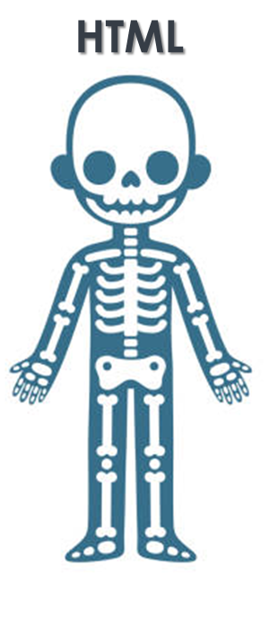

Tema: Primeros Pasos en la Creación de una Página Web
Introducción a HTML, CSS y JavaScript
Introducción
En la era digital actual, tener conocimientos básicos sobre la creación de páginas web es una habilidad valiosa y cada vez más importante. HTML, CSS y JavaScript son los lenguajes fundamentales utilizados para construir páginas web. En este tema, proporcionaremos una introducción accesible y comprensible para aquellos que nunca han trabajado con estos lenguajes, explorando qué son, cómo se utilizan y cómo se combinan para crear sitios web dinámicos y atractivos.
HTML: El Esqueleto de una Página Web
HTML, que significa Lenguaje de Marcado de Hipertexto (HyperText Markup Language), es el lenguaje base utilizado para estructurar y organizar el contenido de una página web. En HTML, se utilizan etiquetas (tags) para definir diferentes elementos, como encabezados, párrafos, imágenes, enlaces y más. Estas etiquetas proporcionan una organización lógica del contenido que los navegadores web interpretan y muestran correctamente al usuario.
CSS: Estilo y Presentación
CSS, o Hojas de Estilo en Cascada (Cascading Style Sheets), se utiliza para diseñar la apariencia y el estilo visual de una página web creada con HTML. Permite controlar el color, el tamaño, la fuente, el espaciado y la disposición de los elementos HTML en la página. Con CSS, los desarrolladores pueden crear diseños atractivos, adaptativos y consistentes para sus sitios web.

JavaScript: Interactividad y Funcionalidad
JavaScript es un lenguaje de programación de alto nivel que se utiliza para agregar interactividad y funcionalidad dinámica a una página web. Con JavaScript, los desarrolladores pueden manipular el contenido HTML, responder a eventos del usuario, validar formularios, crear efectos visuales y mucho más. Es una herramienta poderosa que permite crear experiencias web interactivas y personalizadas.

Video Explicativo
(Aquí aparece el video)
Conclusión
HTML, CSS y JavaScript son los pilares fundamentales de la creación de páginas web modernas. Combinando la estructura proporcionada por HTML, el estilo y la presentación ofrecidos por CSS, y la interactividad y funcionalidad dinámica proporcionadas por JavaScript, los desarrolladores pueden crear sitios web atractivos, funcionales e intuitivos. Con este conocimiento básico, cualquiera puede dar sus primeros pasos en el emocionante mundo del desarrollo web.